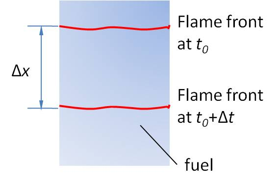
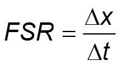
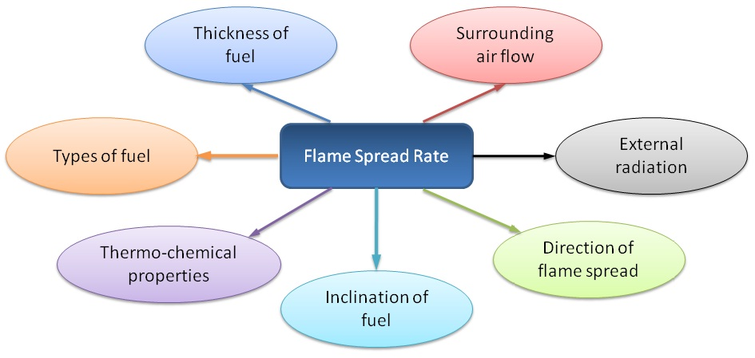

Process in Solid Fuel Combustion
- The flame front generates heat and pyrolyzes the unburnt side of the solid fuel.
- Pyrolysis is the process during which solid fuel undergoes thermal degradation in the absence of oxidizer.
- Pyrolysis leads to flow of fuel vapour.
- Followed by this, mixing of ambient air with the fuel vapour occurs.
- Fuel-air mixture gets ignited, and thereby forming a self-sustained flame.
- Flame propagates in the downward direction.
Flame Spread Rate
-

- The length of the paper consumed per unit time by the flame is known as Flame Spread Rate (FSR).
- As the flame front propagates in the downward direction, the solid furl surface regresses.
Flame Spread Rate (FSR):
Factors Affecting Flame Spread Rate
